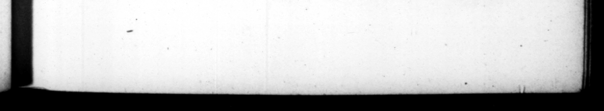

. D. JULIUS ASGAR. vitum jefcunque opus, efſer, Gen res crean aefiros longo intervallo creayit, numerum prætorum auxit. Exetzit et iam, ut quories Hulatus ſibi ur, binos pro ſingulis collegas haberet : nec obtinuit, reclamantibus cunctis ſatis majeſtatem ejus imminui, _ honorem eum non ſolus ed cum altero gereret. | ering out 38. Nec parcior. in bellica virtute. honoranda, ſuper xxx ducibus jaſtos triumphos, & aliquanto pluribus triumphalia ornamenca curavit. Liberis ſenatoram, quo celerius Reip. adſueſcereat, protinus virilem togam, latum clayum induere, & curiæ intereſſe permiſit : militiamque auſpicantibus, non tribunatum modo legionum, ſed & præfecturas alarum dedic : ac ne quis expers caũlrorum eſſet, binos plerumque laticlavios præpoſuit ſingulis alis. Equitum turmas frequenter recagnovit, poſt longam intercapedinem reducto more tran/vec lienis. Sed neque detratit quemquam in trauſvchendo av accuſatore paſſus eſt; quod aeri ſolebat : & ſenio vel a11qua corporis labe infignibus permilit, præmiſſo in ordine equo, ad reſpondendum, quus ties citarentur, ped ibus venue: mox reddendi equi gratiam fecit eis qui majores annorum quinque & triginta retinere eum nollent. aua mes, when called upon of gi vi Age, h 39. Impetratiſque a ſenatu decem adjutoribus, unumquemque equicum rationem vitæ reddere coegit: atque ex Improbatis alios pœna, alios gnominia notavit : plures aunonitione, {ed varia. Leom. the occ that he . below k holding No gd alone, 4 22 con j 77 king an account of _ the ſeveral troops i liged te [e 7 Ha revived tog the office *f the genwe, which time laid.” ſors, whic 4 hog Fane. de, and —. 70 P 7 2 encregſ e 15? 0 3 pretors. He likewiſe inſiſted, the 8 ; oft as, the conſulſbip was cer 26% he . two colleagues infliad of b ut one, but could not prevail as to that point, all unanimouſly grandeur 772 on with another. 33. Nor was be leſs careful to reward military merit ; he granted to aboxe thirty generals the honour of the great triumph, and took care to have triumthal ornaments voted by the ſenate for more than that number. And in order to bring the ſenators ſons ſooner acquainted with affairs of ſtate, permitted them, at the ſame time they took _— them the manly habit, to aſſume the ſenatorian tumck tos, and to be preſent at the debates of the houſe. Aud when they entered 'the ſervice of their country in the wars, he ga ve them not only tribunes's commiſſions, but likewiſe the command of the auxiliary horſe of a Arion. And that none might want an opportunity of attaining to 4 9nd experience in military affairs, he commonly put two ſenators ſons in commiſhon together tor the command of the ſaid Horſe, He frequently reviewed the troops of borſe belonging the ſtate, , re vi ving the ancient cuſtom of trants vection, after it had been long laid afide. Rut did not ſuffer any ene to be obliged by hu accuſer to diſmount, whilſt be paſʒ d in review, as had been uſual before and for ſuch as were infirm with age, ar any ways deformed, he ſuffered them to ſend their herſe before them, and to anſwer-only to their and in a little time allowed the favour up. their horſe, to ſuch as being above five and thirty years of no mind to keep him any longer y, And having obtained ten afglas, from the ſenate, he obliged every one of the horſemen to = an acromt bis life : and of ſuch as be difadproved of, ſome he ſet a mark of infamy 2 and —— pos ot her was, The art be only repri manP mPt 2
